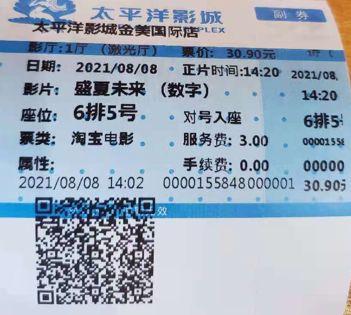

何问起
想问候，不知从何问起，就直接说喜欢你！
玉婷小仙女，你好！
今天是阳历8月14号，也是农历7月初7，也是情人节。
我应该会在这一天把这一封信给到你。
上个周日，就是8月8号，只加班到下午1点多。
然后，打算去看看你(偷偷看一眼就好)。
一想到你离下班时间还早，
我就自己去看了个电影。
我很想邀请你一起去的。
可是，我会收到拒绝的回复。
或者，死沉大海。
或者，被拉黑。
这是让我最伤心的方式了。

- 或许我们都应该学会接受喜欢的人不喜欢自己。
- 其实我这么久放不下并不是非要她欠我一个解释，而是我接受不了他已经不喜欢我了的事实。我无法面对。
- 你不必后退，我不再上前就是了。
以前，不觉得爱情片有什么好看的。
只是没想到，原来要经历过，才能感同身受。
只看了一半，就又通知回去加班，很遗憾。
没有想到，一个人看电影这事，我比你先完成。
来看电影的，有一对情侣、有2个女生、有4个女生。
还有一个我。
还有一个我想象出来的你。
当初，你说听闻爱情，十有九悲。
但是我并没有在意。因为，那个时候，我喜欢的人就在身边。
所以，我并是很赞同。
现在看来，你是对的。
从7月1号你跟我提分手，到现在8月12号了，这快一个半月的时间。
我想了很多，我也反思了很多。
是我不太懂得珍惜，不太懂得怎么去爱。
没有给你足够的关心，还经常惹你生气。
5月23日，我跟你表白。
7月1日，你跟我提分手。
跟我在一起这短短的40天里，
我一直在以我自己舒服的状态里跟你相处，
而，没有照顾到你的感受。
没有让你更开心，反而好像让你更烦恼了。
真的是很抱歉！
想想，自己的一些做法，
真的是太蠢了。
喜欢一个人，总得让她开心吧，
如果觉得喜欢谁，谁就一定要跟自己在一起，
那这还是喜欢吗?
可是，我就是嘴上这么说说，
其实我快伤心死了。
我不确定要用多久的时间才能放下你。
也不敢保证真的把你忘了。
其实我知道你这次是真的想离开我了。
只是，我不想接受这个事实。
偏要死缠烂打的纠缠你。
对不起，请再给我一些时间。
如果陪我到最后的是你，
一路风雨也没有关系。
如果陪我到最后的不是你，
我们的点点滴滴我也会埋藏到心底。
如果我们还能一起走，晚一点也没关系。
因为，那个撒娇的你，仿佛还在昨天。
因为，我还在原地等你...
|